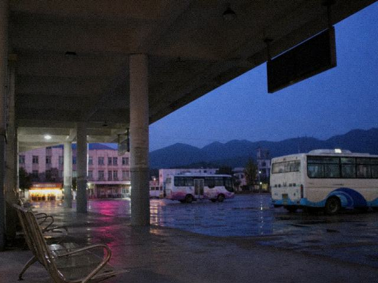

槐溪今晚有夜戏。文旅把折子戏写成非遗套票，含车、含宿、含后台参观。后台两个字是宣传科加的，剧团那边没盖章。
退票办理那栏点了没反应。系统写已开锣。开锣两个字什么时候打上去的，窗口说问剧团。
游客留言里有人把旧论坛链回来了，茶馆还在。要对照班规，得去县实验剧团自己的站。
地址写桐县槐溪镇石板街。班车到镇上还要走一段。夜戏七点开锣，白戏在下午，白戏不卖这套票。
本站模板二〇一二年买的。配色改过，栏目没改。暂停的栏继续挂着，免得有人问为什么少了一格。

槐溪今晚有夜戏。文旅把折子戏写成非遗套票，含车、含宿、含后台参观。后台两个字是宣传科加的，剧团那边没盖章。
退票办理那栏点了没反应。系统写已开锣。开锣两个字什么时候打上去的，窗口说问剧团。
游客留言里有人把旧论坛链回来了，茶馆还在。要对照班规，得去县实验剧团自己的站。
地址写桐县槐溪镇石板街。班车到镇上还要走一段。夜戏七点开锣，白戏在下午，白戏不卖这套票。
本站模板二〇一二年买的。配色改过，栏目没改。暂停的栏继续挂着，免得有人问为什么少了一格。
窗口备忘。小闫八月写的，没人归档，还挂在首页页脚那块空白里。
首页「含后台参观」是宣传科老周一二年加上去的。他当天拿U盘来窗口，说含车含宿不够看，再加后台，套票好往外推。剧团的章我跑去盖过，西厢门关着，门房隔窗丢了一句：后台禁客。老周讲先挂，客人进了镇再解释，解释权在现场。挂了两年，也没人来揭。镇口LED还停在七月「庙会三日」，庙会散了供电所没换字，换一次要派小陈，小陈去河湾村装变压器，不知道哪天回。有人把夜戏听成庙会加场，打进来问香从哪请。香在老郎庙，庙五点关，这页管不着。退票办理那一栏是一二年买的模板自带的，点了没反应。吴窗不让拆，拆了首页少一格，领导来转一圈会问。栏目就这么挂着。留言板那两条八年前的，豆皮、马句，请示过，留着。留着有人骂，也比删了说我们捂强。茶馆链不是文旅做的，是他们自己回链，打得开算他们的事。班车时刻我改过一回，客运站老钱又改末班，首页没跟上。要准点，自己去车站看铁牌子，别盯这页的钟。钟是网页上写死的四点四十，跟车站油漆那块不一定同一天改。首页横幅右侧那张灯笼图是一三年的，灯笼线后来断过，断了福生接过，接得难看。难看也挂着。挂着别当今晚的景。今晚的景要人到了镇口才知道。